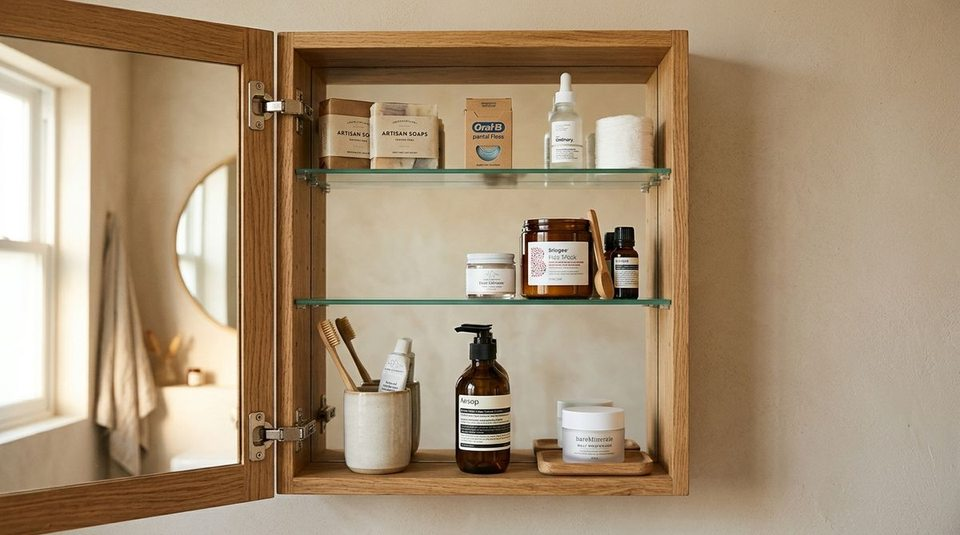

You wake up in the morning, step into your bathroom half-asleep, and reach for your everyday face cleanser. But to grab it, you have to push aside three bottles of travel shampoo, navigate past a giant tub of bath salts you used once last winter, and avoid knocking over an extra unopened tube of toothpaste.
By the time you finally retrieve what you need, your countertop is crowded and your morning has started with unnecessary friction. Your small bathroom technically has storage—yet using it feels like a daily obstacle course.
When a compact bathroom feels chaotic, the root problem is rarely a total lack of square footage. The problem is that your most accessible storage has been assigned to the wrong items.
In a small bathroom, shelf space does not just have physical volume—it has access priority. When you reorganize your existing cabinets and drawers based on how frequently you actually touch each product, your entire routine becomes effortless. You do not need to remodel your bathroom or purchase dozens of plastic bins; you simply need to match accessibility to frequency of use.
The Hidden Problem: Your Best Storage May Be Going to the Wrong Things
In many apartments, bathroom items end up stored wherever they happened to land on moving day, or grouped strictly by product type (e.g., all dental care together, all hair products together, all lotions together).
While organizing by category sounds logical on paper, it often breaks down in practice:
- The "Front Row" Penalty: Storing a brand-new, unopened 32-oz refill bottle right in front of your daily morning serum blocks your primary line of sight.
- Equal-Priority Confusion: An everyday toothbrush and a specialty clay face mask used twice a month receive identical prime real estate.
- Depth Traps: Daily essentials get pushed deeper into cabinets each time an occasional product is returned to the shelf.
Usable convenience is defined by how quickly you can grab and return what you use most. While our guide on reducing visual noise on bathroom countertops focuses on surface calm and visual hierarchy, this system governs the internal architecture of your cabinets and drawers.
The 3-Zone Reach System Explained
To establish an intuitive layout, divide your existing bathroom storage into three practical accessibility tiers:

| Zone Tier | Usage Frequency | Physical Location | Typical Items |
|---|---|---|---|
| 1. DAILY | 1–2x every single day | Easiest reach (eye-level front row, top drawer) | Toothbrush, daily face wash, moisturizer, deodorant, comb |
| 2. WEEKLY | 1–3x per week | Secondary reach (middle shelf, lower drawer) | Exfoliating scrubs, hair masks, nail clippers, styling tools |
| 3. RARELY | Monthly or backup stock | High / deep storage (top shelf, back under-sink) | Unopened toothpaste, extra soap bars, first aid, travel kits |
"The 3 zones are not an inflexible law—they are an adaptable guideline. Your easiest-to-reach zone must be reserved for the items you reach for every single day."
Zone 1: DAILY — Give Everyday Essentials the Easiest Reach
The most accessible zone in your bathroom—the forward edge of your medicine cabinet, the top vanity drawer, or the front row of an eye-level shelf—belongs exclusively to items used every single day.
For most people, this includes:
- Toothbrush and active tube of toothpaste
- Daily facial cleanser and hydrating moisturizer
- Deodorant
- Daily contact lens supplies or hair comb
When you open your cabinet, these items should be visible in one second and retrievable with a single movement. You should never have to shift a secondary item out of the way to reach your morning essentials.
Zone 2: WEEKLY — Keep Occasional Items Convenient, But Secondary
The second tier holds products you use on a regular basis, but not during every morning or evening routine. This includes items used two or three times per week:
- Exfoliating facial treatments and deep conditioning hair masks
- Nail clippers and grooming tweezers
- Specialty styling creams or hair dryers
- Weekly prescription ointments
Assign these to middle shelves, the second vanity drawer, or the middle tier of an over-toilet rack. They remain convenient and easy to find, without encroaching on your primary morning grab zone.
Zone 3: RARELY — Move Backups and Infrequent Supplies Out of Prime Reach
The third tier is designated for items used infrequently, seasonally, or kept as backup reserves:
- Unopened multi-packs of soap, shampoo, and toothpaste
- First-aid supplies, band-aids, and occasional cold remedies
- Travel toiletry kits and extra sunscreen bottles
- Deep bathroom cleaning concentrates (see our guide on organizing bathroom cleaning supplies)
These items belong on the highest cabinet shelves, the deep rear corners of lower under-sink cabinets, or high closet shelves. Moving them out of prime sightlines instantly frees up valuable daily space.
How to Apply the System to Your Existing Bathroom
You can execute this reorganization in under twenty minutes without spending a dime. Follow these six practical steps:
- Audit What You Actually Touch Daily: Take out only the products you used this morning and yesterday evening. Group them together on the counter.
- Identify Your Weekly Routine Items: Set aside the products you use 1–3 times per week.
- Identify Backups and Rare Products: Gather unopened packages, emergency supplies, and seasonal products.
- Map Your Bathroom's Reach Hierarchy: Identify your #1 easiest reach location (usually eye-level cabinet front or top drawer), your #2 secondary area, and your #3 deep/high storage spots.
- Assign Each Group to Its Matching Zone: Place daily essentials into Zone 1, weekly items into Zone 2, and backups into Zone 3.
- Test During Real Morning Use: Over the next 48 hours, observe your routine. If you find yourself digging for an item, promote it to a higher reach zone immediately.
For more common bathroom traps to avoid during setup, review our breakdown of 5 bathroom storage mistakes that make spaces look smaller.
A Simple Example: Organizing One Bathroom Vanity
Here is how a standard small-apartment medicine cabinet changes when reorganized by frequency of use:
Before → After: The Medicine Cabinet Shift
Before:
• Eye-Level Front Shelf: 2 unopened boxes of dental floss, a half-used bottle of cold medicine, a rarely used mud mask, and daily moisturizer wedged behind them.
• Result: Every morning requires knocking over bottles to grab the moisturizer.
After:
• Eye-Level Shelf (Zone 1): Toothbrush cup, daily cleanser, and daily moisturizer in clear single-row view.
• Middle Shelf (Zone 2): Weekly mud mask, nail kit, and hair serum.
• Top Shelf (Zone 3): Backup dental floss boxes and cold medicine stored neatly in the rear.
• Result: Morning routine takes half the time with zero dropped bottles.
What NOT to Put in Your Easiest Reach
To protect your prime storage zones, never allow these four item types into Zone 1:
- Bulk Restock Items: A 3-pack of deodorant should never live in your medicine cabinet. Keep the active stick in Zone 1 and store the remaining two in Zone 3.
- "Just in Case" Toiletries: Hotel sample bottles, guest lotions, and expired remedies should be cleared or relocated.
- Specialty Tools: Hair clippers or special-occasion styling wands belong in lower vanity baskets, not top drawers.
- Heavy Cleaning Bottles: Bleach sprays and toilet cleaners belong low under the sink, never at eye level.
The 3-Question Bathroom Reset
Whenever you unload new toiletries or notice clutter creeping back into your cabinets, ask these three simple questions:
The 3-Question Decision Filter
1. Do I use this every single day?
→ Give it prime, unobstructed reach (Zone 1).
2. Do I use this once or twice a week?
→ Give it convenient secondary reach (Zone 2).
3. Is it a backup, seasonal, or rarely used item?
→ Move it higher, deeper, or under the sink (Zone 3).
Why Frequency Alignment Transforms Small Spaces
Aligning your bathroom by frequency rather than category creates tangible daily benefits:
- Faster Morning Routines: Eliminates five minutes of searching, shuffling, and rearranging items while getting ready.
- Calmer Surfaces: When items are easy to put away in Zone 1, they actually get returned instead of abandoned on the sink edge.
- Better Inventory Awareness: You can see when your active bottle is running low without digging through backup piles.
- Zero Purchase Requirement: Works with standard builder-grade medicine cabinets, pedestal sinks, or small vanity drawers.
For broader ideas on maximizing tight layouts, explore our complete library of small bathroom organization ideas.
Frequently Asked Questions
Only the items you use 1 to 2 times every single day—typically your toothbrush, daily facial cleanser, moisturizer, deodorant, and everyday hair comb.
Store backups on high medicine cabinet shelves, in the deep rear corners under the vanity sink, or inside a linen closet. They do not need to be within immediate arm's reach.
If you have no vanity drawers, apply the 3 zones to your wall-mounted medicine cabinet or a small over-the-toilet shelf. Reserve the lowest, easiest shelf for Zone 1 and use upper tiers for Zones 2 and 3.
Are you 18-24 or a Student? Get 6 Months of Prime for $0!
Limited Time Offer (Ends Oct 9): Enjoy fast, free shipping, unlimited streaming, $0 food delivery (Grubhub+), fuel savings (10¢/gal), Prime Reading, unlimited Amazon Photos storage, and exclusive grocery deals. Claim your 6-month free trial of Prime for Young Adults today.
Try Prime for Free →